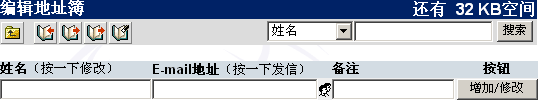

Open Webmail 使用指南
>>
编辑地址簿
地址簿是一个你常用邮件地址的小型资料库，可以让你快速且容易地存取它。然而，地址簿有两种不同的使用模式。编辑模式，用来新增一条记录，删除、编辑、以及使用高级功能。另外一种就是所谓的使用模式，可以在编辑邮件时立即加入收信人的信息（例如：收件人，CC 副本抄送，BCC 密件副本）。
当然，首先你需要先新增记录。你必须先打开地址簿来编辑。只要在主工具条点一下（
 ）这个图标，就可以打开地址簿了。你会被引导到地址簿的编辑窗口。 ）这个图标，就可以打开地址簿了。你会被引导到地址簿的编辑窗口。

很明显地，你的第一步就是要新增一条记录。（注意：也许会出现由系统管理员预先设定的公共地址簿）。在“姓名”栏中输入必要的资料。使用“Tab”键可以直接跳到下一栏。你也可以在“备注”栏中输入昵称等信息。当你输入完成后，点击“增加/修改”按钮，你现在就可以快速地使用这一邮件地址来寄信了。
当你完成所有邮件地址的建档后，也许会想要修正些资料。如想要编辑邮件地址资料，可以在姓名栏上点一下，那一条记录就会出现在上方的编辑区域。就可以修改该条记录，改成你要的样子。当你修改完成后，再点击一次“增加/修改”按钮就可以了。
你可以直接点击右方的“删除”按钮，删除你想要删除的项目。你也许也想要删除所有的项目，但是分开一次一次删除会是枯燥无味的事。当然，你也可以点选（
 ）按钮，直接“清除所有项目”。系统会要求你确认，点选“OK”就会删除所有项目、或是点选“Cancel”就会取消目前的操作。 ）按钮，直接“清除所有项目”。系统会要求你确认，点选“OK”就会删除所有项目、或是点选“Cancel”就会取消目前的操作。
你也可以把许多邮件地址加入到一个邮件组。使用一个邮件地址项目就可以让你发信给许多已经存在的邮件地址，不需要一条一条地重新输入。 想要把许多邮件地址加入到邮件组中，点选邮件组（
 ）就可以了。你会被导引到你的所有邮件地址的新窗口中，点选那些你希望加入到邮件组的项目，然后点选继续按钮。最后完成时再点击“增加/修改”。 ）就可以了。你会被导引到你的所有邮件地址的新窗口中，点选那些你希望加入到邮件组的项目，然后点选继续按钮。最后完成时再点击“增加/修改”。
|